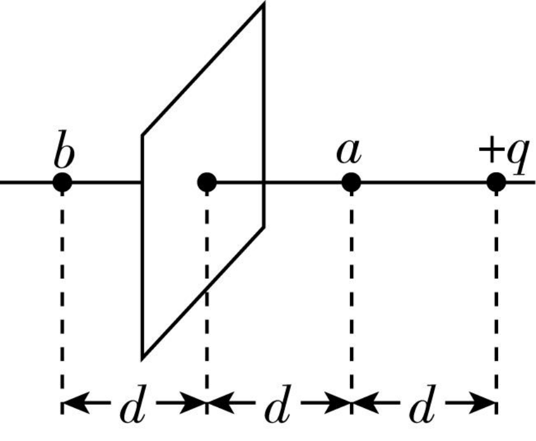
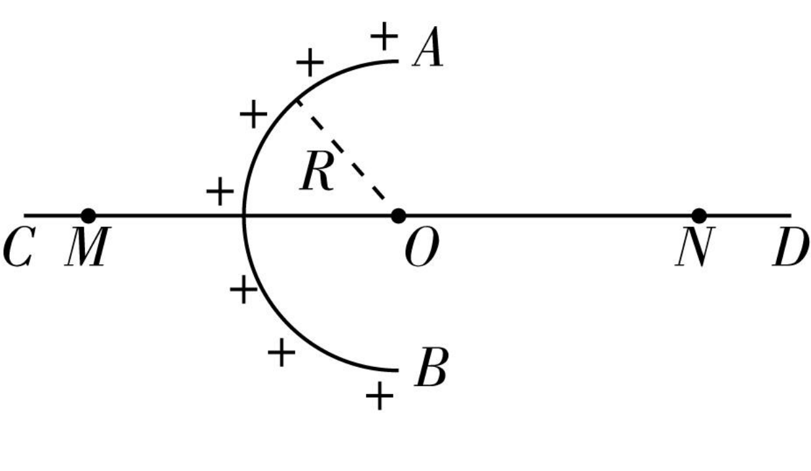
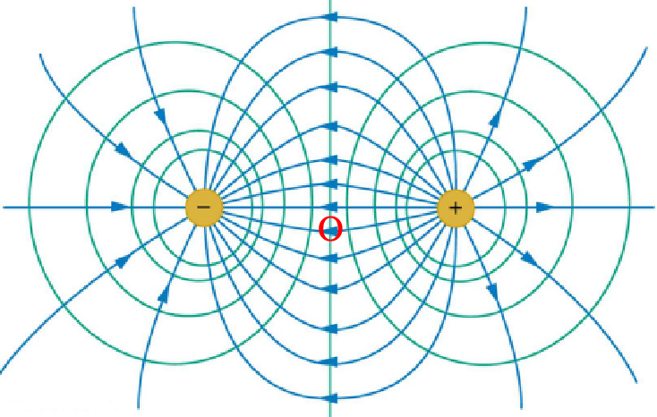
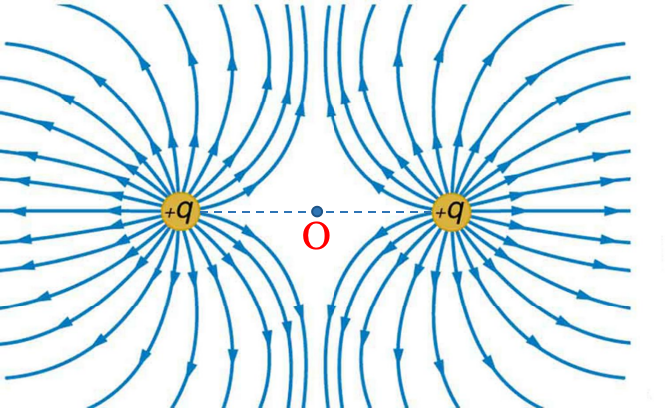
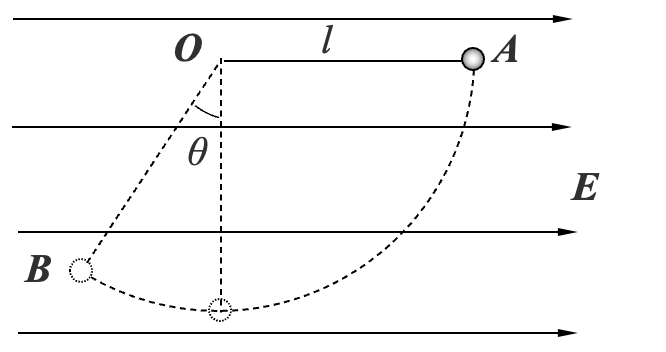
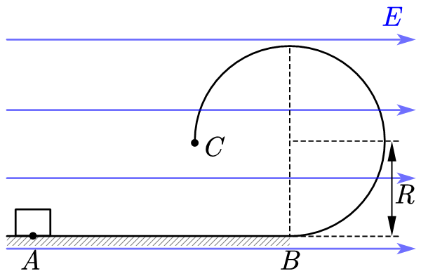
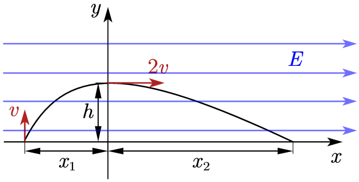

电场强度（场强）
场强的定义
- 意义：描述电场的强弱及方向
- 定义放入电场中某点的试探电荷所受的静电力与其电荷量的比值
- 表达式：E=\frac{F}{q}
用比值定义法定义场强，q 只表示大小，不表示方向。E 是电场本身的性质，与 F 和 q 均无关
- 单位：N /C
- 标矢性：矢量，某点电场的方向与正试探电荷受力方向相同
点电荷电场强度
- 场强表达式：E=k\frac{q}{r^{2}}
判断对错
点电荷电场，到场源电荷距离相等的各点场强相同
场强的叠加
如果有多个场源，空间中某点的电场强度为各个点电荷单独在该点产生的电场强度的矢量和
练习
如图所示，带电荷量为 +q 的点电荷与均匀带电薄板相距 2 d ，点电荷到带电薄板的垂线通过薄板的几何中心，若图中 a 点处的电场强度为零，求图中 b 点处电场强度大小和方向。（静电力常量为 k ）

练习
均匀带电的球壳在球外空间产生的电场等效于电荷集中于球心处产生的电场. 如图所示，在半球面 AB 上均匀分布着正电荷，半球面总电荷量为 q，球面半径为 R，CD 为通过半球顶点与球心 O 的轴线，在轴线上有 M 、 N 两点，OM=ON=2 R ，已知 M 点的场强大小为 E ，静电力常量为 k ，求 N 点的场强大小。

练习
各小段带电体在 P 点激发场强垂直轴向的分量相互抵消，只有轴向分量才对合场强有贡献。
电场线
概念
法拉第采用了一个简洁的方法来描述电场，那就是电场线。电场线是画在电场中的一条条有方向的曲线，曲线上每点的切线方向表示该点的电场强度方向。
特点
- 同一幅图中可以用电场线的疏密表示电场强度的大小。
- 在静电场中，电场线从正电荷或无限远出发，终止于负电荷或无限远，是不闭合的曲线。
- 同一电场的电场线在电场中不相交。
- 电场线不是实际存在的线，是为了形象地描述电场而假想的线。
等量点电荷的电场


轨迹问题
匀强电场
- 定义：各点电场强度的大小相等、方向相同的电场。
- 匀强电场的电场线：间隔相等的平行直线。
- 实例：相距很近带有等量异种电荷的一对平行金属板间的电场 (忽略边缘) 可以看做匀强电场。
练习
如图所示，在水平方向的匀强电场中，一根不可伸长的不导电细线的一端连着一个质量为 m，带电量为 +q 的小球，另一端固定于 O 点，绳长为 l。（已知 \sin37^{\circ}＝0.6，\cos37^{\circ}＝0.8）
- 静止时，细线与竖直方向夹角为 \theta=37^{\circ}，求该电场强度的大小和方向；
- 若改变电场强度的方向，使小球仍在原来位置平衡，求匀强电场的电场强度最小值。
- 若在小球下面再用长为l的绳悬挂一个带 -q 的相同质量小球，稳定后分布形状如何？
整体法与隔离法
- 变式：
练习
如图所示，在水平方向的匀强电场中，一根不可伸长的不导电细线的一端连着一个质量为 m，带电量为 +q 的小球，另一端固定于 O 点，绳长为 l。若把小球拉起至细线与电场方向平行的 A 点，然后无初速释放。已知小球摆到最低点的另一侧 B，线与竖直方向的最大夹角 \theta＝30^{\circ}。求：
- 电场强度 E 的大小；
- 小球经过最低点时细线对小球的拉力 F；
- 能否求出小球运动过程中细线的最大拉力及位置？
- 小球若能做完整的圆周运动，则在 A 点应具备多大的初速度？
- 要使绳子始终被绷紧， A 点应具备多大的初速度？

带电体在重力场和匀强电场中受到的力都是恒力，可以将这两个场合成一个场来看，带电体在这个场中的运动类似于物体在重力场中的运动。我们把合成后的场称为“等效重力场”，相应的有等效重力加速度 g' 和等效重力 mg'。
(1)
mgl\cos \theta - qE(l+l\sin \theta)=0\Rightarrow E=\frac{mg\cos \theta}{q(1+\sin \theta)}=\frac{mg}{\sqrt{ 3 }q}
(2)
\begin{cases} mgl-qEl=\frac{1}{2}mv_{2}^{2} \\ F-mg = m\frac{v_{2}^{2}}{l} \end{cases} \Rightarrow F = 3mg - \frac{2mg}{\sqrt{ 3 }}
(3)
g'=\frac{g}{\cos \theta}=\frac{2}{\sqrt{ 3 }}
\begin{cases} mg'\frac{l}{2}=\frac{1}{2}mv_{3}^{2} \\ F_{m}-mg = m\frac{v_{3}^{2}}{l} \end{cases} \Rightarrow F_{m} = 2mg'=\frac{4}{\sqrt{ 3 }}mg
(4)
记小球在等效重力场中做圆周运动速度最小值为 v'，A 点的临界初速度为v_{4}
\begin{cases} m\frac{v'^{2}}{l}=mg' \\ mg'\frac{3}{2}l=\frac{1}{2}m(v_{4}^{2}-v'^{2}) \end{cases} \Rightarrow v'^{2}=4g'l \Rightarrow v'=2\sqrt{ \frac{2gl}{\sqrt{ 3 }} }
(5)
记小球在等效重力场中刚好运动到与圆心等高时，在 A 点的临界速度为 v_{5}
mg'\frac{l}{2}=mv_{5}^{2}\Rightarrow v_{5}=\sqrt{ g'l }=\sqrt{ \frac{2gl}{\sqrt{ 3 }} }
A 应具备的初速度 v_{A} 应满足 v_{A}<\sqrt{ \frac{2gl}{\sqrt{ 3 }} } 或 v_{A}>2\sqrt{ \frac{2gl}{\sqrt{ 3 }} }
练习
如图所示，竖直平面内有一水平向右的匀强电场，一带电量为 q，质量为 m 的小物块从 A 点静止释放，经过水平轨道 AB 后进入 \frac{3}{4} 光滑圆轨道。已知 qE=\frac{3}{4}mg，圆轨道的半径 R，\mu，m，g。
- 若 AB 光滑，AB 间距离 l_{AB}=R，求运动过程中轨道对小球的最大压力；
- 小物块与 AB 间的动摩擦因数为 \mu，要使小物块能从 C 点离开圆轨道，且在运动过程中紧贴圆轨道，求 l_{AB} 的取值范围。

练习
在竖直平面内有一水平向右的匀强电场，在竖直面内建立平面直角坐标系。有一带电体从 x 的负半轴上某点以初速度 v 竖直向上运动，运动轨迹如图所示，带电体经过 y 轴时，速度方向水平向右，大小为 2v。已知 v,m,q,g。求：
- \frac{h}{x}；
- E；
- x_{1}: x_{2}；
- 运动过程中速度的最小值 v_{min}；
- 运动到速度最小时所需的时间 t。
